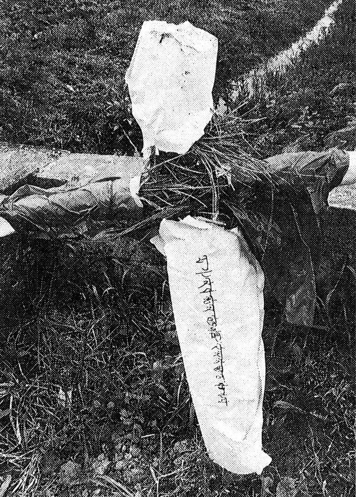
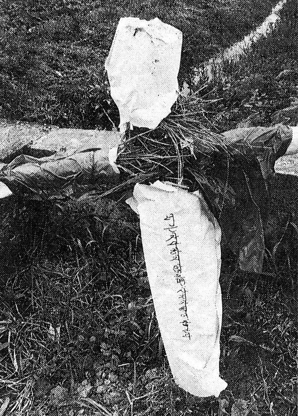
"너는 자수하지않으면 사지가 썩어 죽는다."
- 첫번째 희생자가 발견된 자리 위에 세워졌던 허수아비
화성 연쇄살인 사건(華城 連鎖殺人 事件)은 1986년부터 1991년까지 대한민국의
경기도 화성군 일대에서 여성 10명이 살해된 미해결 사건이다. 최초 사건은 1986년
9월 15일에 일어났으며, 마지막 사건은 1991년 4월 3일에 일어났다.
이 사건들의 공소시효는 범행 당시의 형사소송법 규정(제249조)에 따라 범행 후
15년이 지난 2001년 9월 14일 ~ 2006년 4월 2일 사이에 모두 만료되었다.
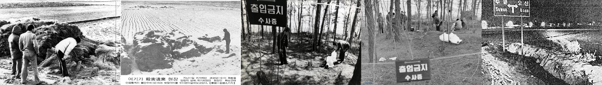
사건 일지
1차 : 1986년 9월 15일, 태안읍 안녕리 목초지, 이완임(71세)
2차 : 1986년 10월 20일, 태안읍 진안리 농수로, 박현숙(25세)
3차 : 1986년 12월 12일, 태안읍 안녕리 축대, 권정분(25세)
4차 : 1986년 12월 14일, 정남면 관항리 농수로, 이계숙(23세)
5차 : 1987년 1월 10일, 태안읍 황계리 논바닥, 홍진영(19세)
6차 : 1987년 5월 2일, 태안읍 진안리 야산, 박은주(29세)
7차 : 1988년 9월 7일, 팔탄면 가재리 농수로, 안기순(54세)
8차 : 1988년 9월 16일, 태안읍 진안리 자택, 박상희(14세) - 모방범 검거
9차 : 1990년 11월 15일, 태안읍 병점리 야산, 김미정(14세)
10차 : 1991년 4월 3일, 동탄면 반송리 야산, 권순상(69세)
1차 - 1986년 9월 19일 PM 02:00 발견
1986년 9월 14일, 경기도 화성군 정나면 백리의 밭에서 이완임 할머니는
밭에서 재배한 채소들을 팔기 위해 수원으로 갔다.
태안읍 안녕리에 살고 있던 딸의 집에서 잠을 자고 다음날 새벽 6시,
아침을 먹고 가라던 딸을 뿌리치고 집을 나섰다.
당시 71세였던 할머니는 가을에 일거리가 많던 시골이였기 때문에 걸음을 재촉했다.
그 후 실종되었다.
그리고 닷새 후인 9월 19일 오후 2시경
딸의 집에서 10분쯤 떨어진 안녕리 길 옆 목초밭의 우거진 풀들 사이에서
할머니의 시신이 발견된다.
부검결과 할머니의 목을 졸라 살해한 것으로 나타났으며 성추행 흔적이 남아있었다.
딸의 집에서 버스를 타러 큰 길로 가던 중 살해된 것으로 보이며 가을이라 이슬이
내린 이유에서인지 범인의 지문, 유류품, 족적 모두 일절 발견되지않았다.
오로지 할머니의 고무신과 양말 등이 현장 주위에 버려져있었다.
범인의 것으로 추정되는 담배꽁초도 발견되었지만 당시에는 DNA 수사가 없었던지라
결국 수사에 실패하고만다.
2차 - 1986년 10월 23일 PM 02:50 발견
1차 사건 이후 1달 후 같은 사건이 발생한다.
1986년 10월 20일 pm 02:00, 송탄시 신정도에 살고 있던 박현숙(25)양은
태안읍 송산리에 사는 수양어머니를 만나러 태안읍 버스정류장에서 내려 집으로 간다.
빼어난 미모로 유명했던 박현숙양은 허모씨의 집에서 남자를 만나기 위해
블라우스와 스커트를 입고 집에서 남자와 간단한 식사를 한 후
8시 50분경 마을입구까지 수양어머니의 배웅을 받은 후 1km정도 되는 긴 농수록
둑길을 걸으며 송탄으로 가는 버스를 타기 위해 걸음을 재촉했다.
하지만 당시 흐린 날씨로 인해 사방이 캄캄했고 인적이 드물었다한다.
그러고 사흘 후인 10월 23일 pm 02:00
진안리 논 주인에 의해서 농수로 콘크리트 수로 속에서 알몸인 채로 사망해있는
박현숙 양이 발견된다.
그녀의 가슴에는 날카로운 흉기로 찔린 듯한 상처가 여럿 나 있었고 등에도 있었다.
얼굴에는 눈물자국이 말라붙어있었고 목엔 스타킹이 감겨있어 질식사로 숨졌다.
정액 양성반응이 나왔고 피의자인 것으로 보이는 우유팩, 담배꽁초, 모발을 통해
B형 혈액형으로 밝혀졌다.
3차 - 1987년 4월 23일 PM 02:00 발견
1986년 12월 12일 pm 06:00 경
공장에서 일을 하던 권정분(25)씨는 일을 마친 후 남편 직장이 있는 수원시 세류동
근처에서 저녁식사를 하고 남편의 재촉에 따라 10:30 경 버스를 타고 11시가 약간
지나 안녕리 삼거리에서 내렸다.
삼거리 바로 앞 정수섬유 밑으로 나 있는 작은 도로를 걸어가던 그녀는
집에서 100m도 떨어져있지 않은 곳에서 범행을 당한다.
분명 비명을 질렀을테지만 인적이 드문 곳이였으며 어둠 속에서 범인에게 끌려가
논바닥으로 가게 된다. 손이 뒤로 묶인 상태로 스타킹과 거들, 팬티가 벗겨져있었으며
소리를 지르지 못하게 한 듯 거들과 스타킹이 입에 물려 있었다.
안타깝게도 시신은 4개월이 지나서야 발견되었고 피묻은 팬티가 얼굴에 씌여져있었으며
도저히 부검조차 불가능할 정도로 부패한 상태였다.
4차 - 1986년 12월 21일 PM 00:30 발견
세정남면 관항리 관항천둑 옆 들깨단 속에서 발견된 이씨는 3차 범행이 있은 후
불과 이틀 뒤에 숨졌었다. 1986년 12월 14일 일요일, 이계숙 양은 3번째 피해자
권정분 씨가 다닌 동흥제과 바로 옆에 있던 안녕리의 정수섬유에서 오전근무를
마치고 오후 늦게 수원 시내의 다방에서 맞선을 보았다고 한다.
관항리에서 미인으로 유명했고 맞선남과 데이트를 계속하며 밤 10시를 넘겨서야
막차가 끊어질 때쯤 헤어진다.
늦은 시각 시내버스를 타고 기숙사로 돌아갈까 했지만 집에서 걱정할 부모님과
오빠를 생각하며 마을에서 1km 떨어진 그녀의 집 근처 정남면 면소재지에 내린다.
당일은 비가 왔고 그녀가 내린 곳은 버스의 종점이였다.
그렇지만 그녀는 돌아오지않았다.
그렇게 일주일이 되던 12월 21일 pm 12:30 경
광항천 둑에서 들깻단으로 덮여있던 그녀의 시신을 발견하게 된다.
그녀는 양손이 뒤로 묶인 상태였고 블라우스로 묶여있었다. 거들을 머리에 뒤집어쓰인
채 스타킹으로 교살당한 것으로 보이며 우산 손잡이 쪽에 혈흔이 묻어있었다.
5차 - 1987년 1월 11일 PM 01:00 발견
1987년 1월 10일 토요일, 졸업을 얼마 남겨두지않은 19살의 홍진영 양이
싸늘한 시신으로 발견된다.
집안 생계를 위해 취직을 서두르던 그녀는 졸업을 앞두고 회사에 이력서를
제출한다. 그리고 수원시 북문 근처에서 친구를 만나 수다를 떨고
08:30 경 태안읍으로 향하는 버스를 올라탄다. 지름길로 가기 위해
수원시 세류동을 지나 태안읍 진안리와 경계인 반정리 정류소에서 내린다.
그때 시간은 08:50 경이였다.
황구천 둑길로 걸어들어가 엔젤악기의 하얀 공장과 집들이 있는 안녕리의
낮은 산동네를 보며 걸음을 채촉한다. 그러던 중 둑 중간 즈음에
짚가리가 쌓여 있는 곳에 숨어있던 범인의 습격을 받았다.
홍 양은 양손이 브래지어로 묶여 있었고 목에는 목도리가 감겨 있었다.
즉, 이번에도 교살로 살해된 것이며 현장 주위에는 머리카락, 음모,
찢긴 천조각 등 증거물을 다수 확보해 B형인 것을 확신할 수 있었다.
6차 - 1987년 5월 9일 PM 15:00 발견
1987년 5월 2일 토요일 저녁, 봄이였지만 굵은 빗줄기가 계속되었다.
진안리의 가정주부였던 박은주(29)씨는 밤 9시가 지나도 남편이
귀가하지않자 우산을 들고 마중을 나가게된다.
청색 츄리닝 상의와 바지에 블라우스를 입고 21:30 경 버스정류장에
도착한다.(목격자진술) 그리고 22:00까지 기다렸지만 남편은 오지않았다.
반면 남편은 22:30 경 수원에서 버스를 타고 집으로 귀가하던 중이였다.
11시쯤 버스정류장에 내려 비를 맞으며 집으로 달려갔지만 아내가 집에 없어
이웃집에 마실을 간 것으로 생각해 밤새 기다렸다.
하지만 아내는 돌아오지 않았고 다음날 어쩔 수 없이 출근한다.
너무 걱정되 실종신고를 하였고 결국 일주일이 지난 5월 9일 토요일 오후
아이들이 방과후 야산을 넘어 귀가하던 중 무덤 옆 소나무 가지치기 더미에서
여자의 시신을 발견한다. 그녀의 시신은 상체가 완전히 벗겨진 채 양손이 뒤로 묶여 있었다.
이번에도 교살. 주변에는 234mm 정도의 족적이 발견되었다.
하지만 국과수 수사결과 츄리닝 상의에서 A형 정액이 나왔지만 그녀의
남편도 A형이였기에 범인의 혈액형이라 보기 어려웠고 그동안의 단서가
B형이라서 단정짓기 힘들었다. 즉, 단독범행이 아닐 수도 있다는 결론이 나온다.
하지만 이번 사건은 지금까지와는 다른 패턴이였다.
입에 재갈도 물려있지않고 얼굴에 거들이 씌워져있지도 않고 혈액형도 달랐다.
따라서 면식범의 범행으로 추정되었지만 가정주부가 어떻게 함께 야산까지 올라갔는지도
이해하기 어려운 부분이였다.
7차 - 1988년 9월 8일 AM 09:30 발견
아시안게임이 끝나고 88년 서울올림픽이 개막되기 열흘 전이였다.
장남이 운영하는 수원시내의 분식집에서 일손을 돕고 저녁 8시 40분쯤 수원극장
맞은 편에서 발안행 시내버스를 타고 가재리에서 내려 야산을 넘기 위해
소로를 걸어 소하천을 건넌 뒤 야산을 넘으려했던 안기순(54)씨는 범인에게
납치되어 마루나무가 있는 위쪽으로 끌려가 살해되는 사건이 발생한다.
당시 그녀의 남편은 그녀가 돌아오지않자 친척들과 연락해 날이 밝자마자 찾아 헤메는데
남편의 사촌동생인 백모 씨에 의해 풀숲에서 피가 흥건한 그녀를 발견하게 된다.
그녀는 반듯하게 눕혀져 있었고 양손은 블라우스로 묶인 채 입에는 양말과 손수건으로
재갈이 물려 있었다. 사인은 성폭행 후 블라우스 끈으로 인한 경부 압박 질식사.
충격적이였던건 국과수 부검결과 그녀의 질 내부에서 복숭아 조각이 발견된다.
그리고 수원시 세류동에 살고 있던 22세 김모 씨를 집중 추궁했지만 범인이 아니라는
증인만 여럿 나타나면서 사건은 또 흔적없이 미궁에 빠지게 된다.
8차 - 1988년 9월 16일 AM 06:50 발견
88서울올림픽 개최 하루 전날 9월 16일 am 06:50 경 진안 1리 야산 북쪽 기슭에 살고 있던
박상희(13) 양이 죽어있는 것을 그녀의 어머니가 발견한다.
학교갈 시간이 되었는 데도 깨지않았기 때문에 깨우러 이불을 걷어 차다 하의가 벗겨져
있는 것을 발견한다.
그녀는 죽기 전 몹시 고통스러웠는지 얼굴에 눈물 자국이 말라붙어있었다.
하지만 지금까지와의 연쇄살인과는 다른 방법으로 희생당했었다.
속옷이나 거들을 통한 목조름이 아닌 손으로 목을 조른 액살이였고 흉기의 흔적도 없었다.
지푸라기 더미나 수로에서 발견된 것과는 달리 집안에서 발생했고 시신의 모습도 달랐다.
현장에서 범인의 것으로 보이는 음모와 슬리퍼 족적을 발견해 국과수에 의뢰했고
결과 용접이나 페인트 작업을 많이 하는 사람일 것이라는 결과가 나왔다.
그와 관련된 화성일대 32군데의 공장 종업원들에게서 모발과 음모를 수거해 감정했고
엄청난 많은 숫자의 사람들을 감정한 탓에 국과수에서 진을 뺐다.
결과적으로 22세 방위병 윤영택이 같은 음모를 가진게 밝혀졌고 그는 당시 고등학생이던
피해자 언니를 짝사랑하고 있었는데 언니를 강간하러 들어가다 동생방에 잘못들어가
저항하던 동생을 목을 졸라 살해한 것이였다.
하지만 여죄를 추궁한 끝에 지금까지의 연쇄살인과의 연관성을 찾지못하고 끝나버렸다.
9차 - 1990년 11월 16일 AM 09:50 발견
7차 사건이 일어나고 약 14개월동안 범행이 발생하지않았다. 그 이유로 이 기간동안
용의자가 군복무를 하고 있지 않았을까하는 추측이 일고 있다.
그렇게 시간이 지나고 1990년 11월 15일, 태안읍 능리에 살고 있던 김미정(14) 양이
9시가 되도록 집에 돌아오질 않는다. 불길한 예감에 가족들은 불길한 예감을 느끼게 되고
그날 밤부터 능리에서 병점리 상성석재가 있는 곳까지 찾아헤메며 김미정 양을 찾아나선다.
결국 그녀의 삼촌 김모 씨가 태안읍 병점5리의 야산에서 하얀 속바지를 입고 그 위를
교복으로 덮인 채 죽어있는 미정 양을 발견하게 된다.
그녀의 시체는 양손과 양발이 검정 스타킹으로 묶여있었고 브래지어로 재갈이 물려있었다.
사인 또한 스타킹과 블라우스로 인한 교살.
그동안의 공백기동안 욕구를 한꺼번에 터트린듯 피해자의 필통에 있던 칼로 양쪽 가슴을
20회정도 찌른 흔적이 발견되었고 손과 발을 뒤로 휘게해서 활처럼 만들었다.
다행히도 시신을 빨리 발견한 탓에 많은 증거물을 발견했고 부검도 가능했다.
부검 결과 난도질을 당한 상태에서 수저, 포크, 볼펜 등을 질 내에 삽입했을을 파악했다.
그리고 위장 안에는 소화되지않은 잡채가 발견되었는데 그 말로는 잡채를 먹은지 2시간
이내에 살해가 되었다고 볼 수 있었다.
10차 - 1991년 4월 4일 AM 09:30 발견
김미정 양이 살해되고 5개월이 지난 1991년 4월 4일 또다른 사건이 발생한다.
하지만 이번 사건은 그동안과는 너무 달라서 형사들이 대단히 놀랄 수 밖에 없었다.
지금까지 발생한 화성군 태안읍에서 멀리 떨어진 동탄면 반송리 야산에서 당시 69세의
권순상 할머니의 시신이 발견되었기 때문이다.
할머니는 당시 4월 3일 수원시 매탄동에 사는 큰딸의 집에 방문했다가 집으로 돌아오는
길에 봉변당한 것이다. pm 06:00 즈음 딸의 집에서 나와 수원에서 8시경 버스를 타고
09:00 즈음 동탄면 오산리 버스정류장에서 내려 집이 있는 반송리 쪽으로 가고있었다.
그런데 발견된 할머니는 입에 재갈이 물려있지도않았고 손이 뒤로 묶여있지도 않았다.
7차때의 피해자와 같이 질 내부에 양말이 삽입되어 있었다. 그리고 그 양말에는
B형의 정액이 검출되었다. 지문도 발견되었지만 잡지는 못했다.
하지만 이 사건이 평상시의 사건과는 다른 양상이였지만 화성에서 일어났고 혈액형이
B형이라서 연쇄살인 사건에 포함시켰다. 아마 모방범의 소행일지도 모른다는 추측이
주를 이루고 있다.
이 사건을 마지막으로 화성에선 더이상의 같은 살인사건이 발생하지 않고있다.
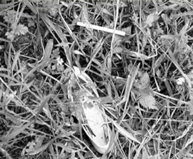
자수해
잊지않겠다
돌아와
반드시 찾고야 말겠다
기억할 것이다
고통을 기억해
피눈물
제발로 들어와라
기다려라
이제 그만
기억하겠다
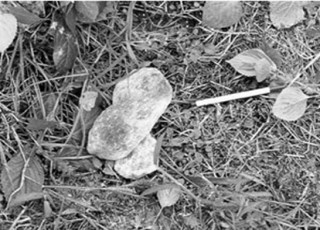
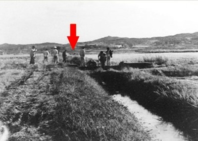
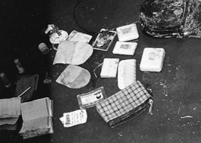
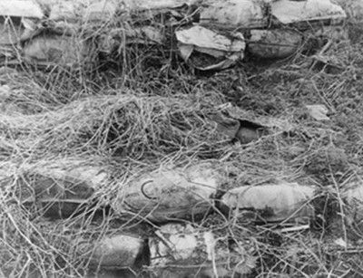
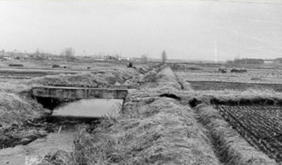
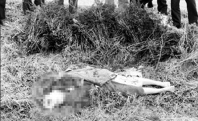
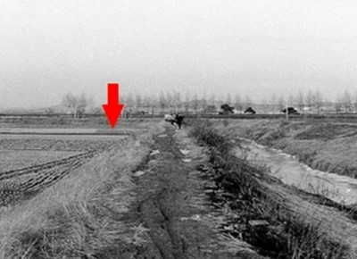
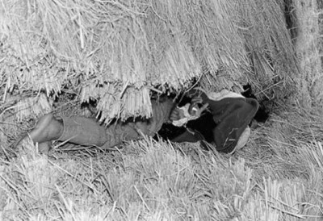
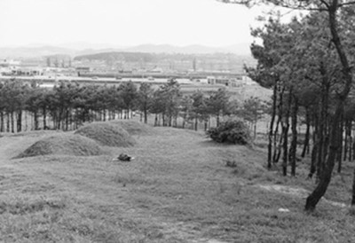
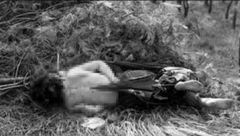
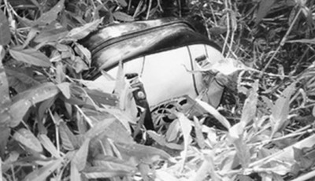
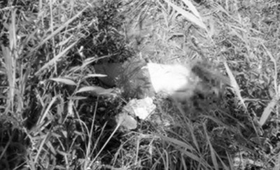
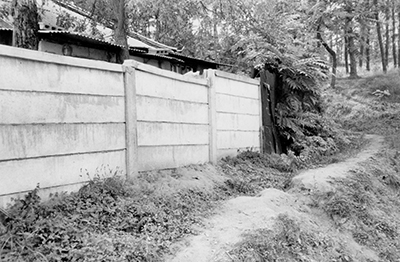
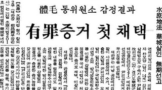
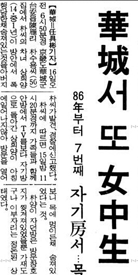
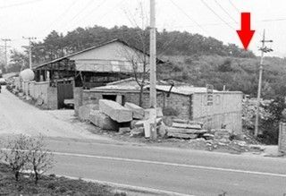
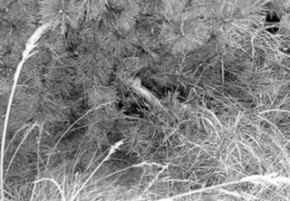
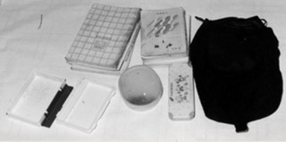
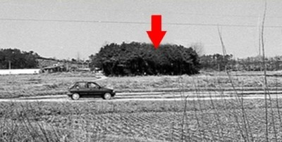
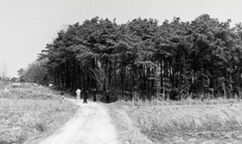
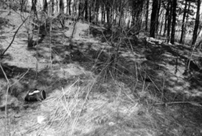

MONTAGE
화성연쇄살인사건의 용의자를 찾습니다.
현상금 500만원
용의자 인상 특징
신장 : 165~170cm 가량
코가 우뚝하고 눈매가 찢어진듯 날카로움
갸름하고 보통 체격
평소 구부정한 모습과 성대결절
혈액형 B형, 현재는 50대 초반 정도의 나이
위 내용을 신고하여 범인검거에 결정적 제보를 하여 주신 분에게
비밀 유지는 물론 현상금을 지급하겠읍니다.
결론
화성연쇄살인사건은 대한민국 3대 미제 사건 중 하나이고 가장 잔혹한 살인사건 중 하나이다.
아직 과학수사의 기법이 적용되지않던 시절에 일어난 사건이라 상당히 해결하기 쉬운 사건임에도
불구하고 범인의 특징만 알아냈을 뿐 추적하는 데에 실패했다.
2006년 결국 공소시효가 끝나버렸고 범인은 여전히 미스테리이다. B형의 호리호리한 체형,
찢어진 눈에 현재는 50대 정도의 나이. 그는 수원시에 거주했으며 힘없는 피해자들을
난도질한 뒤 무참히 살해하였다. 담배꽁초도 버리고 머리카락도 남겨놓아 DNA 감식방법을 통해
수사했으면 금방 잡았을테지만 당시 국내에서는 보편화되지않은 기술이였고 흔적도 사라져 결국
어둠 속으로 사라져버렸다.
연인원 180만의 경찰이 투입되고 3,000여 명의 용의자가 수사받는 등 역사상 최대의 인력이
동원된 사건이지만 허수아비로 저주하고 뒷사정이나 캐는 등 전근대적인 수사방식이였고
하필이면 과학 수사 방법이 이 사건 이후에야 체계화되던 때여서 더욱이나 안타까운 사건이다.
정말 안타깝게 범인을 놓친 경우가 많았고 수많은 피해자가 발생한 연쇄살인 사건인 탓에
지금도 그를 잡기 위해 이를 갈고 있으며 피해자들은 땅 속 깊은 곳에서 피눈물을 흘리고 있다.
"그는 다른 사건으로 오래 전부터 교도소에 수감돼 있거나 이미 죽었을 것이다.
그렇지 않다면 살인행각을 멈출 수 없기 때문이다."
- 불과 1년만에 20명을 살해한 연쇄살인마 유영철
Copyrightⓒ 2018/All Rights Reserved - KSK